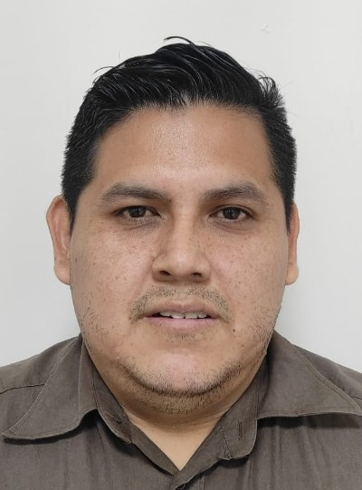

Jim Banchon | WDD 130
Hello! My name is Jim Banchon and I am from Guayaquil, Ecuador. I enjoy video games, and watching technology videos. My job is technical support at Almacenes Juan Eljuri in Samborondon, Ecuador. I have been working there for 3 years.